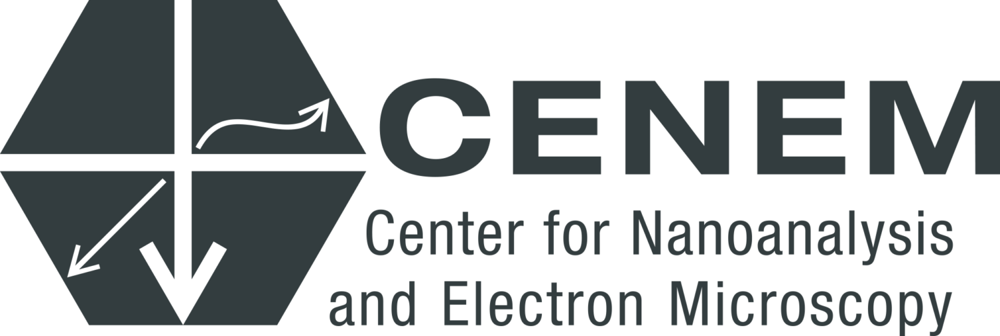
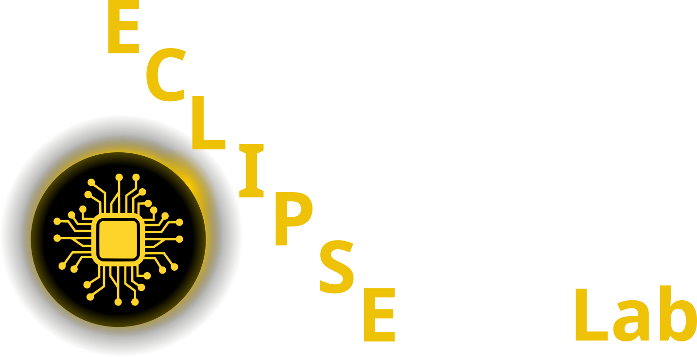
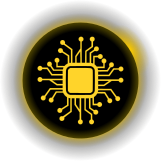

Data Science for Electron Microscopy
Week 2: Learning from EM data: signal formation, noise & loss
FAU Erlangen-Nürnberg
Institute of Micro- and Nanostructure Research


Three numbers you will understand today
Week 1: you loaded an EM image into NumPy and added np.random.poisson noise. Today: why Poisson — and what it does to your loss.
√2
SNR gain when you double the dose
→ Act 4 · Counting
6 Å
the lattice you see when you image a 2 Å lattice with 1.5 Å pixels
→ Act 3 · Sampling
−20 %
bias of a textbook χ² fit at 5 counts per pixel; the Poisson loss has none
→ Act 5 · Loss
Today’s red line: follow one electron
Act 1 · Learn
What does it mean to learn from data?
Classical analysis writes the rules. ML learns them.
Three ways to learn — set by where the labels come from
More flexibility is not better: bias vs variance
White, grey or black box: how much physics is built in?
Act 2 · Signal
What does an EM pixel measure?
Every EM number passes through six links
The model sees only the end of the chain. What the chain destroys, no model can recover without a forward model or a prior.
Four modalities, four tensor shapes
Act 3 · Sampling
Is the pixel grid fine enough?
Nyquist: at least two pixels per period — better four
Undersampling turns a 2 Å lattice into a false 6 Å lattice
Moiré fringes: real structure or artefact?
Act 4 · Counting
Why is every pixel noisy?
Electrons arrive one at a time: counts are Poisson
Twice the SNR costs four times the dose
The detector blurs: scintillator vs direct electron detector
Real detectors add Gaussian read noise
\(x = g\cdot\text{Poisson}(\lambda) + \mathcal N(0, \sigma_r^2)\), with gain \(g\) (ADU per electron) and read noise \(\sigma_r\).
Measure your detector: the variance–mean plot
Act 5 · Loss
Which loss does the physics dictate?
Learning = maximum likelihood
\(\displaystyle \hat\theta = \arg\max_\theta \prod_i p\big(y_i \mid f_\theta(\mathbf{x}_i)\big) = \arg\min_\theta \sum_i \underbrace{-\log p\big(y_i \mid f_\theta(\mathbf{x}_i)\big)}_{\color{#f43f5e}{\text{loss } \ell}}\)
Gaussian noise → mean squared error
1 · noise model
\(y_i = \mu_i + \varepsilon_i,\;\; \varepsilon_i \sim \mathcal N(0, \sigma^2)\)
\(p(y_i\mid\mu_i) = \dfrac{1}{\sqrt{2\pi\sigma^2}}\, e^{-\frac{(y_i-\mu_i)^2}{2\sigma^2}}\)
2 · take −log
\(-\log p = \dfrac{(y_i-\mu_i)^2}{2\sigma^2} + \tfrac12 \log 2\pi\sigma^2\)
3 · drop terms without θ
\(\color{#94a3b8}{\tfrac{1}{2\sigma^2}}\,(y_i-\mu_i)^2\; \color{#94a3b8}{+\,\tfrac12\log 2\pi\sigma^2}\)
\(\Rightarrow\;\; \ell_\text{MSE} = (y_i - \mu_i)^2\)
Every nn.MSELoss() claims: Gaussian, independent, same σ for every pixel. True left of the crossover on the variance–mean plot; false for shot noise.
Poisson noise → Poisson negative log-likelihood
1 · noise model
\(y_i \sim \text{Poisson}(\lambda_i),\;\; \lambda_i = f_\theta(\mathbf x_i) > 0\)
\(p(y_i\mid\lambda_i) = \dfrac{\lambda_i^{\,y_i}\, e^{-\lambda_i}}{y_i!}\)
2 · take −log
\(-\log p = \lambda_i - y_i \log \lambda_i + \log(y_i!)\)
3 · drop terms without θ
\(\lambda_i - y_i\log\lambda_i\; \color{#94a3b8}{+\,\log(y_i!)}\)
\(\Rightarrow\;\; \ell_\text{Pois} = \lambda_i - y_i \log\lambda_i\)
Gradient: \(\;\partial\ell_\text{Pois}/\partial\lambda = (\lambda - y)/\lambda\;\) = MSE gradient ÷ variance. The Poisson loss weights each pixel by 1/variance — automatically.
Same minimum, different weights
Variance-stabilising transform: Poisson → ≈ Gaussian
Experiment: same spectrum, four losses, four answers
Which loss? Follow the physics
Priors become regularisers: MAP estimation
\(\displaystyle \hat\theta_\text{MAP} = \arg\min_\theta \Big[\underbrace{-\log p(\mathcal D\mid\theta)}_{\text{data term: today's loss}}\;\underbrace{-\log p(\theta)}_{\color{#f43f5e}{\text{prior → regulariser}}}\Big]\)
Act 6 · Trust
Can I trust the data and the model?
Eight artefacts — and the plot that catches each
Metadata: the measurement you forget to save
FAIR: data that a machine can reuse
F
Findable
DOI, rich metadata, indexed in a repository
A
Accessible
standard protocol; metadata stays open even if data are restricted
I
Interoperable
open formats (EMD, NeXus), shared units and vocabularies
R
Reusable
licence, provenance, acquisition parameters, processing script
Payoff for ML: reusable training data, reproducible splits, models you can re-validate on someone else’s microscope.
Aleatoric vs epistemic: what more data can fix
Pre-flight checklist: run it before any training
The red line, complete
Must-know for the exam
1 A loss is the negative log-likelihood of a noise model. MSE ⇔ Gaussian with constant variance.
2 Poisson counts: Var = mean, SNR = √λ. Twice the SNR needs 4× the dose.
3 Poisson loss ℓ = λ − y log λ weights each pixel by 1/variance.
4 At low counts, χ² with observed-count weights and naive Anscombe are biased; Poisson NLL is not.
5 Variance–mean plot: slope = gain, intercept = read-noise variance.
6 Sample at ≥ 2× (in practice 3–4×) the highest frequency. Aliasing does not average out.
7 Without dose, gain and pixel size in the metadata, EM data cannot be modelled quantitatively (FAIR).
Self-study this week
Notebook (molab): notebooks/unit02_noise_and_loss.py — “Poisson noise, SNR & the right loss”
- Parts 1–6: simulate dose-dependent Poisson noise; find the dose at which a defect column disappears (CNR).
- Part 7: variance–mean plot of a Poisson–Gaussian detector → recover gain and read noise.
- Parts 8–9: write the Poisson NLL yourself; fit a low-count peak with four losses; measure bias and scatter.
CPU only; the notebook runs in under a minute. Sign in to molab → Fork → your own copy.

- Must-know review: exam_mustknow.md, Week 2.
- Your own data: run the pre-flight checklist on one EM data set.
Next week: linear algebra, PCA & spectral unmixing
PCA minimises a squared error → it assumes Gaussian noise. NMF with the KL divergence minimises the Poisson NLL. Week 3 is today’s loss, applied to matrix factorisation.
- Vectors, matrices and the SVD — the language of ML.
- PCA on an EELS / EDS spectrum image: which components are signal, which are noise?
- NMF and MCR-ALS: non-negative unmixing into spectra and abundance maps; Poisson weighting before PCA.
Continue
Backup slides
Material outside the 90-minute path, for questions and self-study.
Cheat sheet: noise model → loss
| Data / noise model | Likelihood | Loss | PyTorch |
|---|---|---|---|
| Read-noise dominated, constant \(\sigma\) | Gaussian | MSE | nn.MSELoss |
| Known per-pixel \(\sigma_i\) | Gaussian, heteroscedastic | weighted MSE \(\sum (y-\mu)^2/\sigma_i^2\) | custom |
| Model predicts \(\mu\) and \(\sigma^2\) | Gaussian | Gaussian NLL | nn.GaussianNLLLoss |
| Electron counts (DED, counting mode) | Poisson | Poisson NLL | nn.PoissonNLLLoss |
| Counts + read noise | Poisson–Gaussian | VST + MSE, or mixed NLL | Anscombe + MSELoss |
| Outliers, hot pixels, X-ray hits | Laplace / heavy-tailed | MAE / Huber | nn.L1Loss, nn.HuberLoss |
| Class labels (phase, defect type) | Categorical | cross-entropy | nn.CrossEntropyLoss |
| Binary masks (segmentation) | Bernoulli | binary cross-entropy | nn.BCEWithLogitsLoss |
STEM measurement families

Supervised learning: regression vs classification
- Regression: continuous target \(y \in \mathbb{R}\) — strain from a 4D-STEM pattern, atomic-column positions. Loss: MSE or Poisson NLL.
- Classification: discrete label \(y \in \{1,\ldots,K\}\) — oxide / metal / carbide from EELS. Loss: cross-entropy.
- The physical quantity sets the output type: a “phase index of 2.7” is nonsense; binning strain throws resolution away.
Self-supervised learning: why Noise2Noise works
- Train a denoiser on pairs of noisy images of the same scene Lehtinen, Jaakko et al., (2018).
- If the noise is zero-mean given the clean signal, \(\mathbb{E}[y_2 \mid x] = s\), so the MSE minimiser for target \(y_2\) is the clean image \(s\).
- Works for Poisson, Gaussian, salt-and-pepper noise. Fails for coherent artefacts (drift, Moiré): they are the same in both frames.
- EM: odd/even frames of a counting-mode movie are a ready-made pair (Week 8).
References

©Philipp Pelz - FAU Erlangen-Nürnberg - Data Science for Electron Microscopy